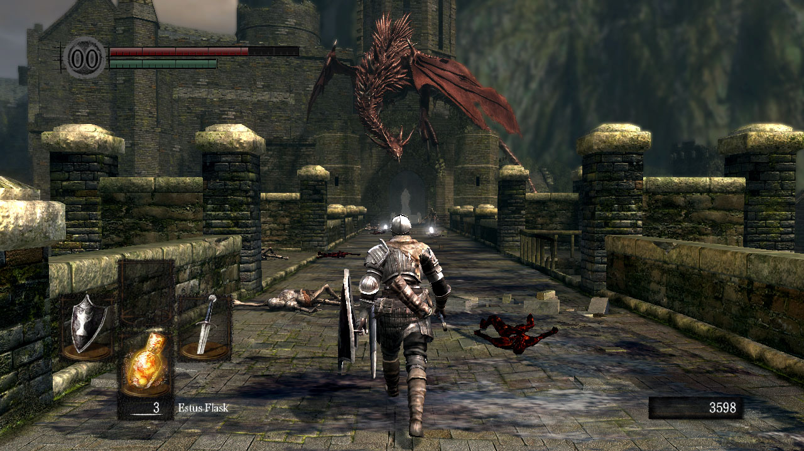
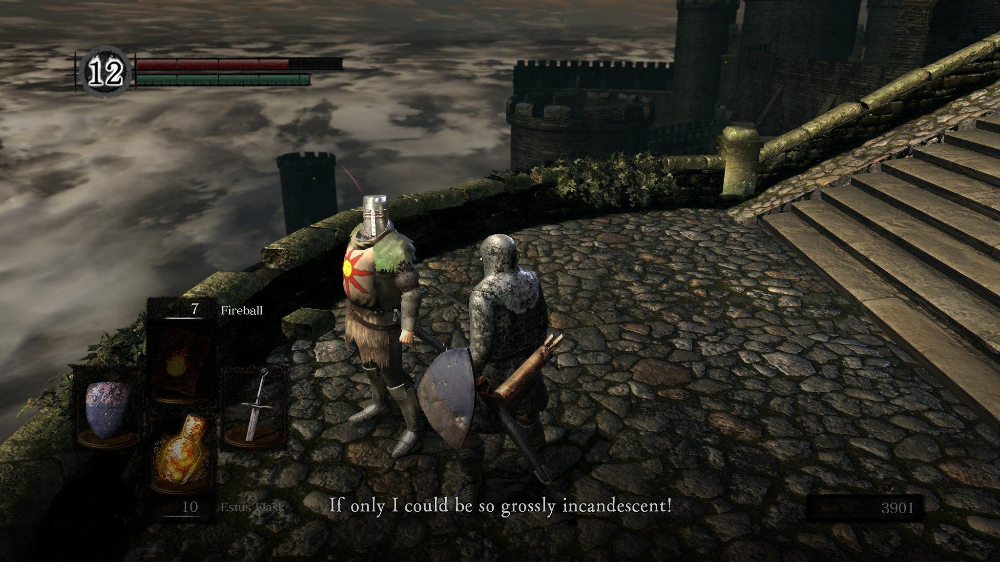

⚔️
Боевая система
Расчёт урона, учёт защиты, контроль характеристик атакующего и защищающегося персонажа.
Учебный программный проект в жанре action-RPG, вдохновлённый Dark Souls: исследование мрачного мира, боевая система в реальном времени, инвентарь, квесты, сохранения и модульная архитектура.
SoulForgeRPG — учебный проект по дисциплине «Профессиональная практика программной инженерии». Приложение моделирует структуру однопользовательской RPG-игры с мрачной атмосферой, взаимосвязанными локациями и сложными сражениями против враждебных существ.
Проект используется как основа для практики работы с Git, ветвлением, восстановлением ревизий, самодокументирующимся кодом, ручной документацией и публикацией результатов в веб-формате.
Расчёт урона, учёт защиты, контроль характеристик атакующего и защищающегося персонажа.
Переходы между локациями, перемещение по карте и работа с точками интереса игрового мира.
Хранение предметов, оружия и ресурсов, необходимых для выживания и развития героя.
Система заданий и фиксации прогресса при выполнении сюжетных и побочных задач.
Выбор поведения врагов в зависимости от ситуации и текущего состояния боя.
Поддержка сохранения игровых данных и последующего восстановления состояния сеанса.
Проект организован по пакетам, каждый из которых отвечает за отдельную часть системы: интерфейс, игровую логику, искусственный интеллект, мир и служебные подсистемы.


Ниже размещены ссылки на лабораторные отчёты и сопроводительные материалы проекта.
В рамках лабораторной работы №6 для проекта SoulForgeRPG создан одностраничный веб-сайт, объединяющий описание программного продукта, его архитектуру, используемые технологии и отчёты по всем этапам выполнения курса.
Сайт может быть размещён через GitHub Pages и использоваться как публичная точка входа к материалам проекта и сопроводительной документации.